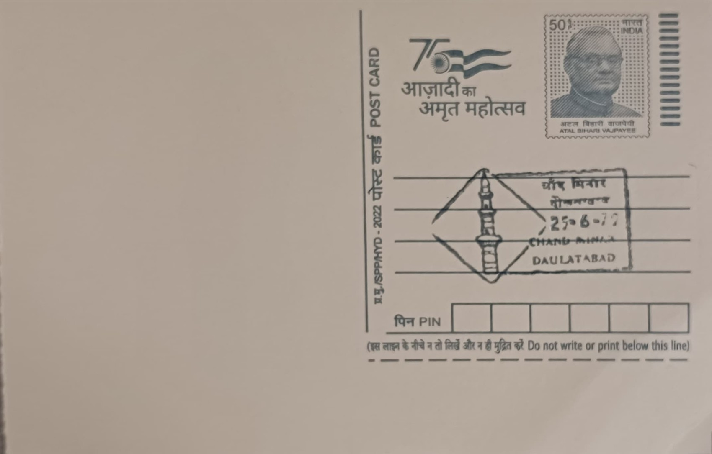

Chand Minar
चांद मिनार


The name Chand Minar, meaning "Tower of the Moon," is popularly attributed to the pale, moonlit hue of the plaster and tilework that once covered its surface, though some local tradition instead links it to the tower's slender, crescent-like profile rising against the Deccan sky. It was raised in 1445 by the Bahmani ruler Ala-ud-Din Ahmad Shah, who commissioned the structure to mark his seizure of Daulatabad Fort from the rival Malwa forces, turning an act of conquest into a permanent architectural statement set within the fort he had just secured.
As a victory tower, Chand Minar belongs to the same broad tradition of commemorative minarets as the Qutub Minar in Delhi, which it deliberately echoes in form, and it ranks among the tallest free-standing medieval stone towers in India. Its significance is both historical and artistic: it marks a key transition point in the Deccan from Delhi Sultanate control to independent Bahmani rule, and it is regarded as one of the finest surviving examples of Indo-Islamic monumental architecture in southern India, reflecting the cultural exchange between Persian craftsmen and local building traditions under Bahmani patronage.
Standing roughly 63 metres tall, the tower is organised into four storeys connected internally by narrow staircases, with around two dozen chambers distributed across its tapering, fluted shaft. Persian architects and craftsmen are credited with much of its design and decorative scheme, which originally included bands of blue, turquoise, and white glazed tilework along with carved stucco and calligraphic inscriptions, though much of this surface ornamentation has faded or been lost over the centuries. Indigenous touches, such as the stone brackets supporting its projecting balconies, distinguish it from purely Persian or Central Asian prototypes and mark it as a genuinely hybrid regional creation.
A small mosque or prayer hall built into the base of the tower remains one of its more distinctive features, giving the monument a dual identity as both a commemorative pillar and a functioning religious space in its early use. Because of its height, Chand Minar is visible from virtually every vantage point within Daulatabad Fort, making it a natural landmark for orientation across the sprawling hilltop citadel and a visual counterpoint to the fort's other major structure, the Chini Mahal palace nearby. Its survival through repeated changes of regional power, from Bahmani to Nizam Shahi, Mughal, and later Nizam of Hyderabad control, speaks to the durability of its stone core even as its decorative skin weathered.
The Archaeological Survey of India now maintains Chand Minar as a protected monument within the larger Daulatabad Fort complex, having carried out periodic conservation work to reinforce its foundation, stabilise the remaining stucco, and clean sections of its calligraphic ornamentation. The fort and tower together are open to visitors daily, drawing tourists and researchers to a site that pairs Devagiri's ancient defensive engineering with the Bahmani-era tower built atop it. Daulatabad Fort and Chand Minar are frequently visited together with the nearby Ellora and Aurangabad Caves circuit, giving the tower a continuing role as a stop on the region's established heritage trail rather than an isolated ruin.
| Date of Introduction | January 26, 1977 |
|---|---|
| Address | Branch Postmaster, |
| Daulatabad BO, | |
| Chhatrapati Sambhajinagar (dt.), Maharashtra - 431002. |